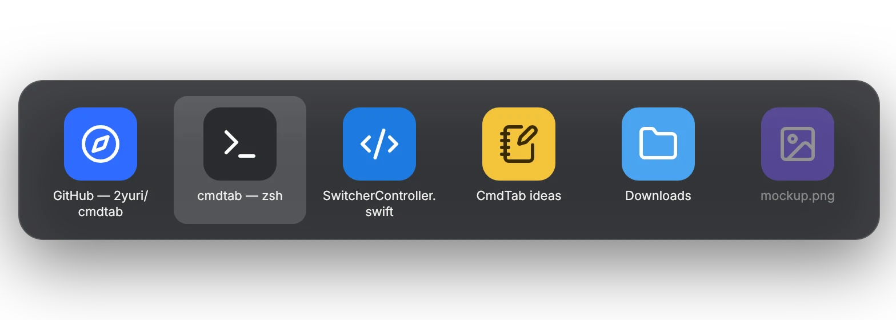
Windows, not apps
Every window gets its own tile with its title, so two Safari windows are two choices, not one.
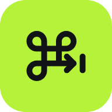
CmdTab switches between windows, not apps, and only shows the ones on the desktop you're on. It idles at 0% CPU until you press the keys.
Free & open source · macOS 14+ · Signed & notarized
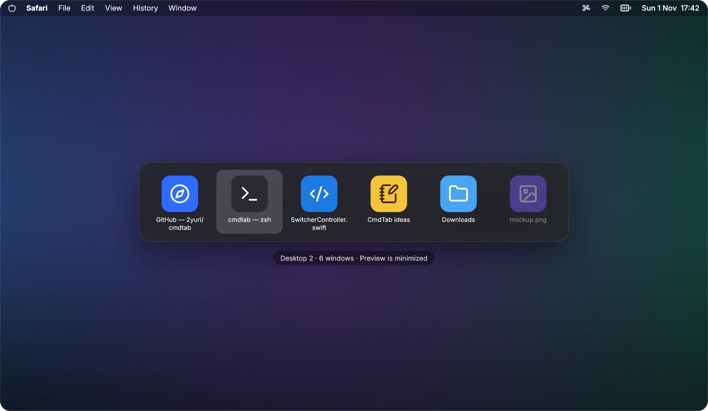
Hold ⌘ and tap ⇥. Let go to switch. Everything else stays out of your way.

Every window gets its own tile with its title, so two Safari windows are two choices, not one.
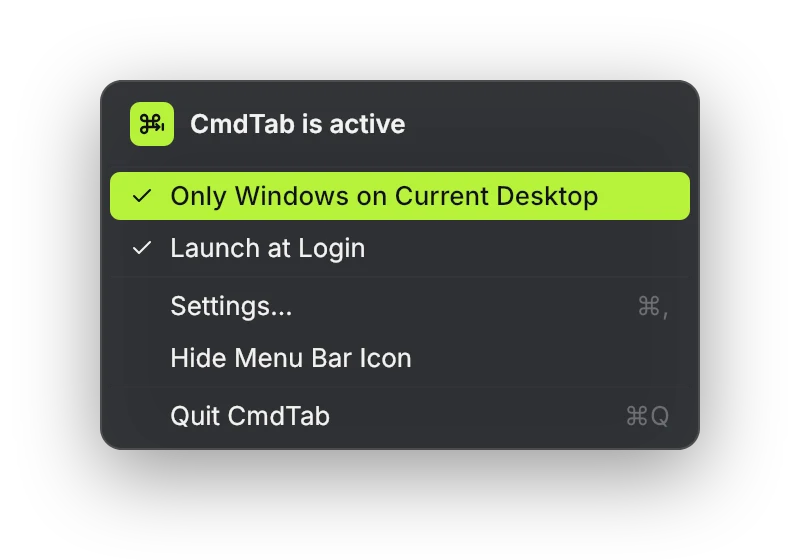
Only windows on the current desktop show up. Turn on All Desktops to see the rest, badged by desktop.
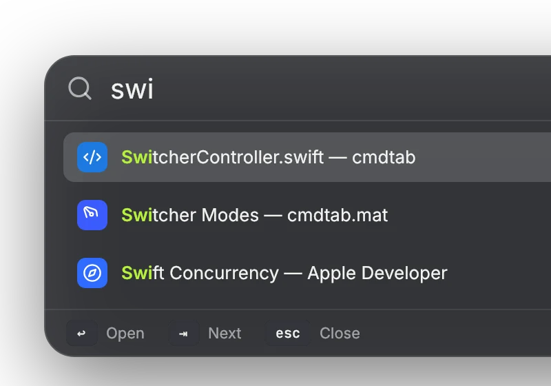
Press ⌘F while it's open and type. Matching titles light up; ↩ opens the window.
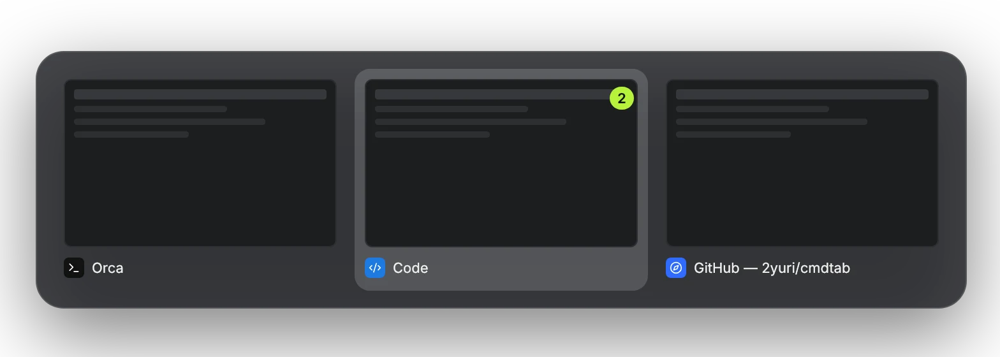
A snapshot of each window, taken only while the switcher is open. Needs Screen Recording; everything else works without it.
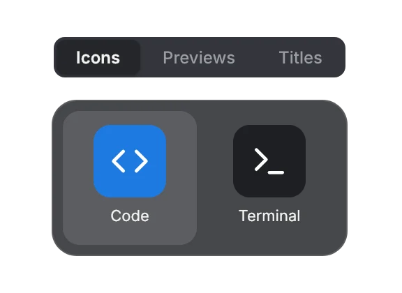
Icons, Previews or Titles. Pick the one that reads fastest for you.
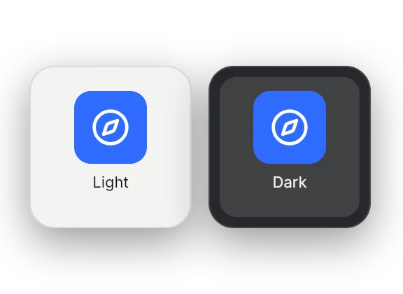
Follows your Mac's appearance, and goes solid when Reduce Transparency is on.
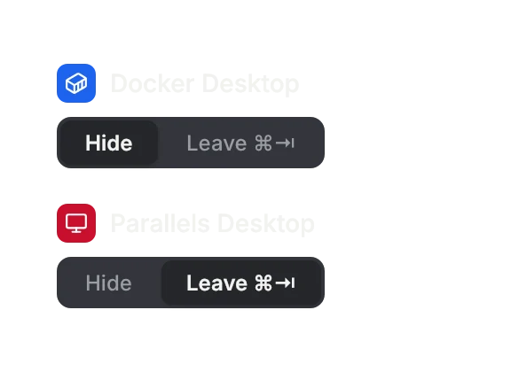
Hide an app from the switcher, or leave ⌘⇥ to it entirely.
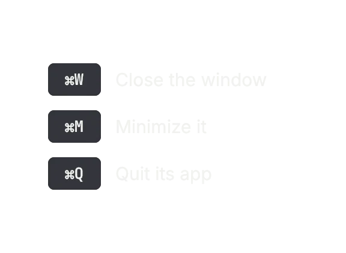
Tidy up from the switcher: it stays open while you close, minimize or quit.
Turn on Scroll Lock and every window becomes a full-height column. Off by default, and it stays out of the way until you turn it on.
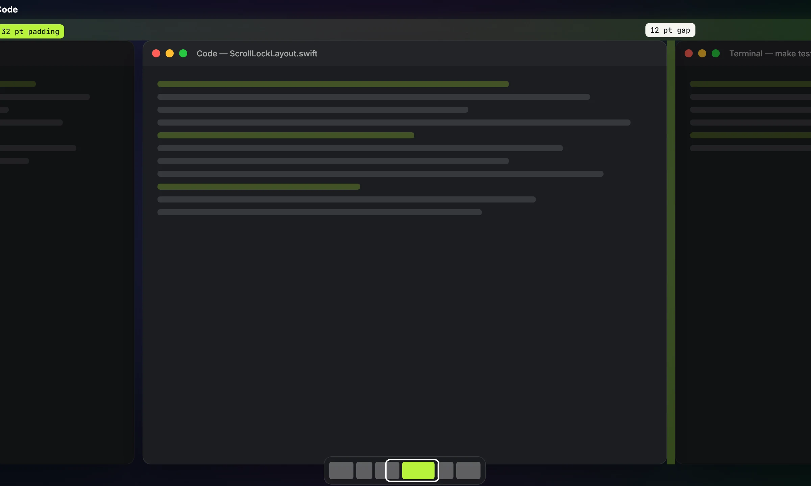
Windows sit side by side as full-height columns and the strip scrolls to the one you focus. A small map shows where you are. ⌃⌥← and ⌃⌥→ move focus; hold ⌃⌥ and scroll to slide the strip.
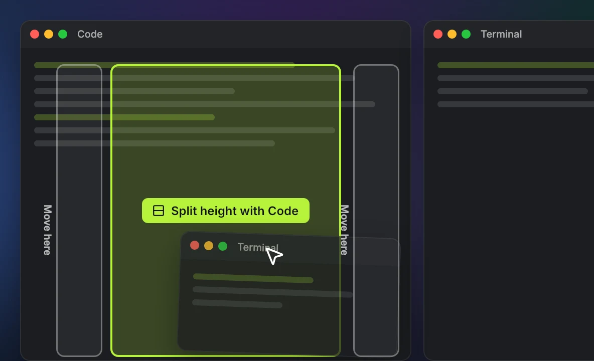
Drag a window onto the middle of a column and the two share its height. Drag to a column's edge to move it there instead.
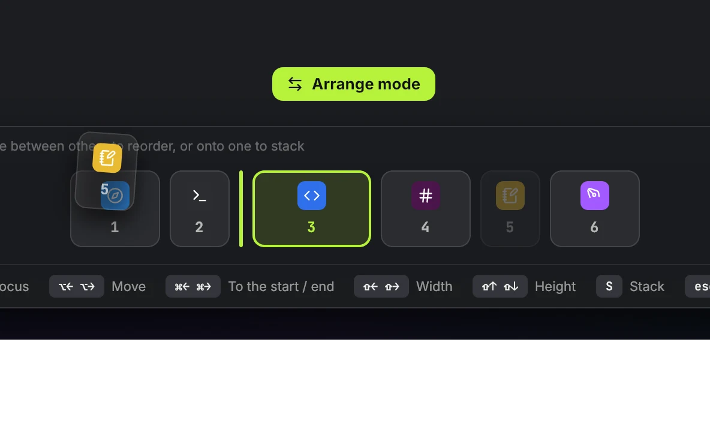
Rearrange everything from the keyboard: move columns, change widths and heights, stack and unstack. Esc when you're done.
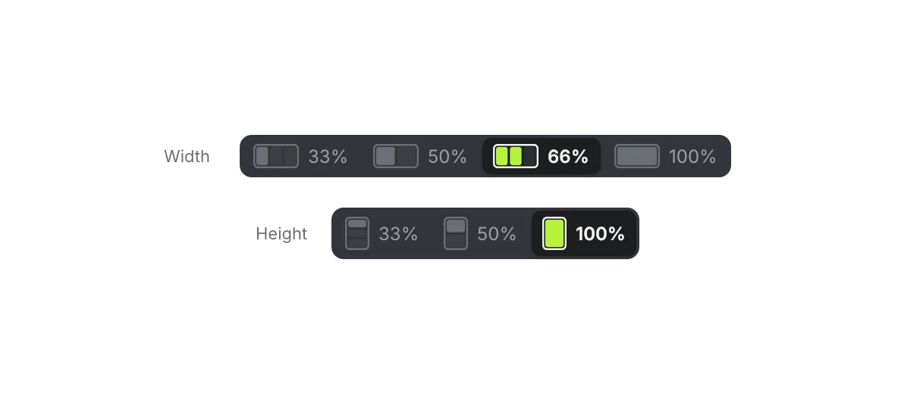
Each window keeps its own width, 33% to 100% of the screen, and its height in a stack. CmdTab remembers them per app.
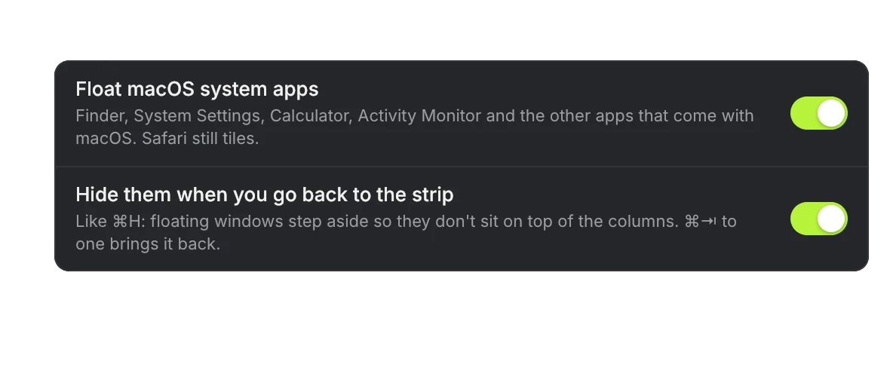
System apps and any app you pick never join the strip, and step aside when you go back to your columns.
CmdTab needs Accessibility and nothing else to switch. When you're not using it, it isn't doing anything.
CPU while idle. CmdTab waits for ⌘⇥ and does nothing in between.
Analytics and telemetry. Nothing about you or your Mac is collected.
Optional update check a day. Turn it off in About.
Signature on every auto update, checked before it installs.
Free & open source · macOS 14+ · Signed & notarized